Cherche d'abord ta réponse, puis ouvre la correction.
Niveau moyen
(A, B ; C, D) est une division harmonique et I est le milieu de [AB]. On a IA = 5 cm et IC = 2 cm (C entre I et B, D du même côté). Que vaut ID ? (relation de Newton : IA² = IC × ID)
2,5 cm
10 cm
12,5 cm
25 cm
Voir la correction de la question 1
Réponse C. 12,5 cm
Relation de Newton : IA² = IC × ID, donc ID = IA² / IC = 25 / 2 = 12,5 cm. C est à l'intérieur de [AB] et D à l'extérieur, du même côté de I. On retrouve l'idée de la relation de Newton en optique : un produit de deux distances égal à un carré.
Niveau difficile
Sur une droite graduée : A(0), B(6), C(2). Quelle est l'abscisse de D pour que (A, B ; C, D) soit une division harmonique, c'est-à-dire CA/CB = −DA/DB ?
−6
4
12
−2
Voir la correction de la question 2
Réponse A. −6
CA/CB = (0 − 2)/(6 − 2) = −0,5. Il faut donc DA/DB = +0,5 : (0 − d)/(6 − d) = 0,5 ⟺ −d = 3 − 0,5d ⟺ d = −6. Vérification avec Newton (I milieu de [AB], abscisse 3) : IA² = 9 et IC × ID = (2 − 3)(−6 − 3) = 9 ✓.

Le QCM compte 2 questions sur ce thème. Chacune est corrigée et expliquée, et celles que tu rates reviennent toutes seules à 1, 3, 7, 14 et 30 jours.